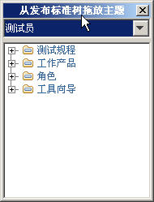
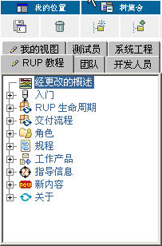

| 我的视图 |
 |
|
| 注意：作为 applet 实施的“我的视图”功能需要 JRE 1.4.2 或更高版本（可从地址 http://java.sun.com/j2se 下载 JRE）。如果您查看的站点没有通过 applet 发布，则不会显示“我的视图”。
浏览器窗口左侧窗格中出现的树形浏览器使您可以浏览 Web 站点中的主题。 最初它包含一组缺省树，或选项卡式的视图面板。 您可以通过创建自己的个性化树形视图来定制导航。开始时，您需要保存一个缺省树，用作新的树形视图的起始模板。然后您可以创建、定制或删除主题。 树的类型树形浏览器显示两种树：
树形浏览器使您可以显示和隐藏其他选项卡上的树，这样您可以只查看您想查看的树。
显示和隐藏树集状态是持久性的。下次您启动 Web 站点时，您将看到您选择的树或所有的树，这取决于上次您使用 Web 站点时选择的状态。 创建我的视图树您可以创建无限数量的我的视图树。以下示例显示如何添加可修改的我的视图树。
此时会显示另存为对话框，提示您为我的视图树输入树标题。
定制我的视图树您可以使用多种方式定制我的视图树及其主题：
向我的视图树中添加新主题
|


|
|
要添加新的主题，请单击添加新节点。 |
| “属性编辑器”对话框打开。输入这个新主题的各种属性。 |
|
|
| 输入各属性值。请注意，您可以使用最右边的浏览按钮浏览到本地文件链接和图标的文件位置。 |
|
|
|
新主题添加到树的末端。 |
注意：您也可以通过从文件浏览器（例如 Windows 资源管理器）将文件拖到树中的任何主题上，添加新的主题。初始情况下，主题名称为文件名。您可以如本节中所述的那样更改它。
将保存对我的视图树的更改。
将缺省树中的现有主题添加到我的视图树中 
本节描述如何将现有主题从缺省树复制到我的视图树中。
|
|
单击从缺省值添加。 |
|
将任一主题拖至我的视图树中。 |
 |
|
也可以选择缺省树，从该树中拖动主题。 单击列表以选择您需要的缺省树。该树使用所选缺省树的主题刷新。 |
将保存对我的视图的更改。
插入新主题
|
|
要将新主题插入到现有的主题中，请右键单击它。 在弹出菜单上，单击插入新项。以下示例显示了在“规程”中插入新主题（标题为新教程主题）。 |
| “属性编辑器”对话框打开。 |
|
|
| 为这个新主题输入各种属性。 |
|
|
|
|
新主题插入到“规程”中。 |
更改主题的属性
|
要更改主题的属性，请右键单击该主题（例如，“概述”）。 在弹出菜单上，选择属性。 |
|
“属性编辑器”对话框打开。在此示例中，主题的标题“概述”将改为“经更改的概述”。 对于“名称”属性，请在值字段中输入经更改的概述，然后单击 Enter。您也可以剪切文本值并将其粘贴到此对话框的值字段中。 单击确定关闭此对话框。 |
|
|
|
该名称已在树上更改。 |
 |
注意：“属性编辑器”对话框中的链接到字段使您可以链接到一个 URL 或系统中任何其他位置的文件。
在父项内移动主题
主题的位置可以在其父项内调整。在此示例中，“规程”主题将向上移动。
|
在弹出菜单上，单击上移。 |
|
显示内容改为向您展示“规程”主题的新位置。 |
将保存对我的视图树的更改。
将主题移出其父项
可以通过使用拖放功能将一个主题移到另一个树。
- 开始，单击主题并将其拖到新的主题。
- 将保存对我的视图的更改。
删除主题
- 要删除主题，请选择要删除的主题并单击删除。
- 将保存对我的视图树的更改。
更改主题的图标
- 要更改树形浏览器中列出的任何主题的图标，请将一个图标文件拖到该主题上或使用“属性编辑器”更改图标的名称。图标文件为 .gif、.jpg 或 .bmp 文件。新图标会替换旧图标。
- 将保存对我的视图树的更改。
删除我的视图树
以下各图说明如何删除我的视图树。
|
|
选择要删除的树（在此示例中为“RUP 教程”）。 单击 RUP 教程选项卡，然后单击删除。 |
此时确认删除树对话框会提示您确认删除。选择确定以是否永久删除 RUP 教程？
|
|
“RUP 教程”树则从树型面板中显示的选项卡中删除。 |
© Copyright IBM Corp. 1987, 2006. All Rights Reserved. |